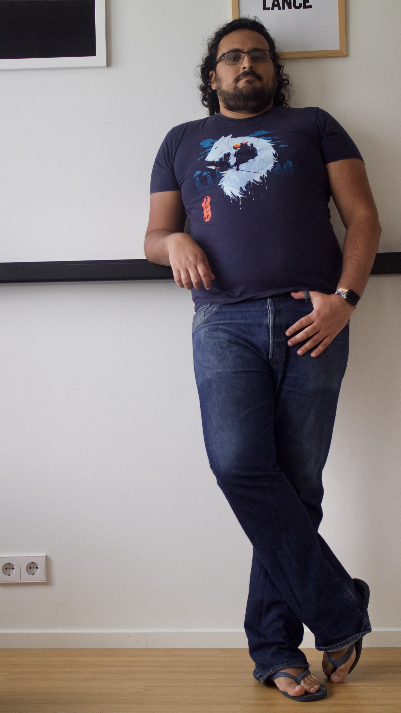

21 Ago 2024
16/07/2010 - Durante um verão
Décimo quinto. Com certeza era o décimo quinto. Era incrível como sempre perdia a conta depois do décimo, mas dessa vez tinha certeza, era o décimo quinto carro vermelho. Podia ter perdido a conta dos carros azuis e amarelos, mas agora estavam bem.
Desta vez tinha sido uma boa escolha, os cinzas e pretos nem valia tentar, os amarelos passavam muito raramente, complicador manter o número na cabeça, agora ficava muito mais fácil, vermelho é a frequência da contagem, se um dia precisar de algo para contar sua cor será vermelho.
Difícil manter a concentração em um dia ensolarado, ainda mais pra fazer uma redação. Caderno, lápis e borracha não foram feitos para serem usados para escrever e sim para desenhar, pra isso sim serviam. Uma prova eram as mais de cinco páginas rabiscadas com o melhor da arte abstrata.
Detestava aquela situação, um texto em prosa com tema livre. Fazer o quê? Uma dissertação? Uma tese? Um artigo? Uma ficção? Um relato? E ainda pior, sobre o quê? Tema livre? Isso não é tema, é tortura.
Durante toda a manhã, a única coisa que queria saber era qual mente maléfica mandaria fazer um texto em prosa com tema livre. Quando ia começar a escrever, a bagunça que a família fazia fez com que abandonasse a idéia de ficar no quarto.
Dentro da mochila estavam os fieis cadernos, lápis e borracha, além de alguns sanduíches, balas, uma barra de chocolate e revistas em quadrinhos, apenas como fonte de inspiração.
Depois de muito pensar, a melhor escolha era pegar a bicicleta e seguir para o parque central, lá seria um bom lugar para pensar, juntar fatos e decidir o que e sobre o que escrever. Pena que não podia ser um desenho seria mais fácil.
Desenhar era sempre livre, diferente de um texto, eles não nasceram para serem livres, pensava naquela época. O caminho ajudou muito a pensar, pena que chegando lá os garotos jogavam bola, todo o pequeno parágrafo introdutório se perdeu aos poucos durante os chutes.
Devia escrever, já estava ficando tarde, mas a criatividade sumiu. Hora dos quadrinhos, sabia que eles seriam úteis, quadrinhos sempre são úteis, lê-los iria estruturar as mais belas história envoltas nas maiores aventuras e com personagens envolventes.
Duro acreditar, mas nada foi escrito. Aqui foi o ponto da contagem de carros, uma tarefa extremamente exaustante, requer muito esforço e atenção. Principalmente por causa dos fuscas, eles parecem sempre conspirar pela falha. Sempre no momento em que um carro da sua cor vai virar a esquina um fusca acelera fazendo barulho, qualquer um olharia para o fusqueta.
Definitivamente essa era a tarefa mais dura de todas, como pode um jovem parar para escrever? Porque temos de escrever nas aulas de português? Essa foi uma dúvida que só foi respondida anos depois.
Dois dias depois, uma segunda feira, foi a data limite da entrega, um martírio. Só que, felizmente, a professora gostou da carta pedindo humildes desculpas de não ter escrito o texto. Para surpresa, grande surpresa, a carta também é considerada um texto.
Igor Castañeda Ferreira
20 Ago 2024
15/07/2010 - O Texto
Muito li a respeito da capacidade e da arte de escrever, mas pouco aprendi com isso. São vários os textos que falam de como dividir os parágrafos, qual a forma de delimitar o tema, como dividir os atos e quando deve-se interromper um acontecimento, só que não foram capazes de me fazer escrever.
Foi quando, folheando um livro sobre audiovisual, eu li uma pequena frase solta no meio da página: “Para que a história seja uma história é necessário que as personagens tenham vida, é preciso que os fatos ocorram por si, sem a interferência do autor”.
Esse pequeno trecho marcou meus pensamentos, dormi vários dias com aquilo em minha cabeça e até hoje não consigo me lembrar qual era o livro e de que autor era, infelizmente.
Sei que não sou bom nisso, mas é uma grande terapia. A tentativa de criar vidas e acontecimentos fazendo com que estes saiam de seu controle a ponto de odiar a antagonista e torcer pela protagonista enquanto seus dedos tocam as teclas é mágico.
Igor Castañeda Ferreira
27 Set 2021
Aviso: Esse texto falará sobre minha visão sobre meu corpo. Se você não tem interesse sobre isso, melhor pular esse post. E, se esse foi um assunto delicado para sua sanidade mental, melhor pular também. P.s.: Esse artigo conterá referência à nudez. Para os que vão parar por aqui, fique com um GIF:

OK, se você ainda está por aqui, é porque pretende continuar lendo. Então, lá vamos nós:
O último post que coloquei nesse site foi sobre Assexualidade. Agora, eu venho postar algo que é relacionado a esse tema, mas não necessariamente ou diretamente: Body image. Estou usando o termo em inglês porque não sei qual é a tradução exata para esse conceito. Além disso, não quero que o foco seja o termo, focarei mais nos sentimentos que envolvem esse conceito e como isso me impactou, me impacta e ainda vai me impactar um pouco mais.
Eu tenho uma idea mental de “mim” que não corresponde ao que vejo no espelho. Me sinto assim já faz muito tempo, sempre aceitei essa ideia e continuei com minha vida. Gostaria de pontuar aqui que não é o mesmo desafio que uma pessoa transexual passa, eu aceito que sou do mesmo gênero que meu corpo apresenta. Só que as proporções e delimitações de meu corpo sempre estiveram para mim, de alguma forma, errada.
Durante adolescência e vida jovem-adulto, culpava o fato de ser muito magro. Hoje em dia, culpo o fato de estar mais gordinho e fora de forma. Nunca exatamente “certo” e tendo como único fator comum que eu nunca soube exatamente o que seria esse “certo”. Eu nunca quis ser muito forte/definido, acho que muito músculo é algo meio estranho (independente de gênero); mas ao mesmo tempo não acredito que ser fino/magro também seja o correto.
Acho importante resaltar aqui que não tenho problema algum com meu corpo no dia-a-dia, mas quando me vejo em fotos/espelho não consigo exatamente ver aquela pessoa como “eu”. Algo semelhante a quando se escuta a própria voz em gravação pela primeira vez: “Se sabe que é você, mas aquela voz soa estranha. Todas as pessoas ao seu redor podem estar acostumadas com aquela voz, e ainda assim, para você, soa estranho”.
Eu sou uma pessoa introvertida, que não vai muito em festas, e viaja sozinho. Logo, fotos minhas (ainda mais quando comecei a morar sozinho) são raridades. E por serem raridades, eu fui me “negando” a tirar fotos, ao ponto de que eu ficava bravo quando alguém tirava foto minha, ou pedia para tirar foto minha. Tal qual a introversão e fobia social, escondo durante eventos, mas sempre desconfortável e nunca querendo ver o resultado.

Essa é a pessoa com a qual não consigo aceitar que sou eu
Um fato sobre mim: Se estou em casa, sozinho, estou sempre pelado, porque acho que roupas são um tanto desconfortáveis e estar nu é mais cômodo. Então, por um breve momento, pensei que seria roupas que trazem esse questionamento a minha mente. Mas, depois de muito pensar, creio que não; uma vez que me ver no espelho, mesmo nu, ainda me incomoda (apesar de eu não dar a mínima ao fato de estar nu). E isso reforça a ideia de que não é um desconforto com meu corpo em si, porque não ligo como eu realmente aparento (quão arrumada está minha barba, ou cabelo, ou a roupa que estou usando, etc). Porque nunca quis “agradar” o olhar de ninguém, apenas vestir o que gosto, da mesma forma que eu acredito que todas as pessoas são livres para vestir o que quiserem (essa parte eu acredito que esteja mais relacionado à assexualidade).
Durante a pandemia, eu comecei a frequentar mais praias de nudismos em Barcelona e próximo a Barcelona. Por dois motivos principais: Há uma praia nudista em Sitges que tem ondas (algo que sinto falta das praias do Brasil), e porque as praias, geralmente, são mais vazias. Acredito que esse é um privilégio de ser um homem, já que há muitos pervertidos que vão a este tipo de praia para “ver mulher nua” (mais perceptíveo/comum entre turistas aqui em Barcelona) e é mais seguro para mim ir a essas praias (mas isso é uma tangente para outro dia). E essas idas às praias nudistas, novamente, levantaram esse questionamento antigo de que eu não me importo como meu corpo parece para as outras pessoas, eu não me importo em como eu vejo o corpo das outras pessoas, mas, por algum motivo, eu me importo em como eu vejo meu corpo.
Esse questionamento chegou a me tirar um pouco o sono. E, por conta disso, eu resolvi fazer um pouco de um “tratamento de choque”, tirando múltiplas selfies minhas, com celular e com uma câmera mais “profissional”. Tanto vestido, quando pelado. Para tentar fazer com que eu me acostume com a visão ou, pelo menos, consiga entender o que cria essa desconexão entre o que penso de mim e o que vejo/sou.

Esse é o corpo que não ligo em mostrar, mas não consigo ver
Parte dessa terapia de choque foi criar uma conta secundária no Reddit e procurar conteúdos/subreddits de nudez não “pornográfica”, para tentar ver se eu criava uma idea do que eu entendo como “ideal” (p.s.: achar esse tipo de conteúdo de homens é complicado, 99% do conteúdo é foto de pênis). E, nos poucos subreddits que encontrei, tentei postar algumas de minhas votos para ver tem um feedback, apesar de que nessas comunidades não há quem vá te “criticar”, então não há um feedback real. Outra parte dessa terapia de choque é esse post. Colocar para as pessoas “próximas” virtualmente esse pensamento e fotos, para que minha alma consiga relaxar um pouco ao saber que algo foi dito.
É isso aí. Esse foi o pensamento da tarde.